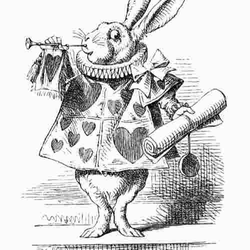

Research Questions

Things that bounce around in my head a lot.
Questions
Animation compression
There's something super interesting about skeletal animation compression for real-time applications like game engines and robotics. You want to store an animation file with as few bits as possible, while maintaining the ability to directly run the animation in compressed format.
I suppose the keyword for this would be something like the oxymoronic homomorphic compression for Lie groups.
When does dual quaternion skinning fail?
In skinned animation, every skin vertex is acted upon by a weighted interpolation of rigid body transformations represented by dual quaternions or homogeneous matrices. But rigid body transformations are not the end of the story for skeletal animation. Many games make use of scaling on top of rotation and translation. Would we benefit from Conformal Geometric Algebra in this scenario?
Last edited 13/06/2025